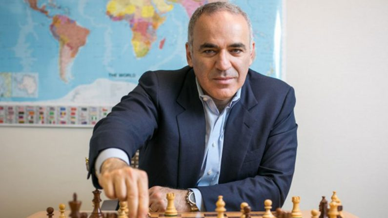
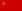

Campeonato Mundial de Xadrez
O primeiro campeonato mundial ocorreu em 1886, quando os dois principais enxadristas da época, Wilhelm Steinitz e Johannes Zukertort, enfrentaram-se. De 1886 a 1946, o campeonato não era organizado por uma entidade, o próprio campeão escolhia o adversário e organizava o desafio. De 1948 a 1993, a organização do campeonato foi feita pela FIDE, a Federação Internacional de xadrez.
Em 1993, o então campeão Garry Kasparov rompeu com a FIDE e criou a PCA, dando início a um campeonato paralelo. Esta situação durou até 2006, quando o título foi reunificado. Ainda em 2006, as duas entidades de xadrez foram unificadas.
Garry Kasparov. Fonte: EPOCH TIMES
Para saber quem seria o novo campeão, a FIDE promoveu um match entre o campeão da FIDE (Veselin Topalov) e o da PCA (Vladimir Kramnik), com Kramnik sagrando-se campeão. No ano de 2007, Viswanathan Anand venceu Kramnik.
Magnus Carlsen. Fonte: The Guardian
Em novembro de 2013, Anand perdeu o título para o jovem Norueguês Magnus Carlsen, na época, o primeiro do ranking, com um rating Elo de 2870.
Campeões mundiais (1886 - atualidade)
| Período | País | Enxadrista |
|---|---|---|
| 1886 - 1893 | Wilhelm Steinitz | |
| 1894 - 1920 | Emanuel Lasker | |
| 1921 - 1926 | José Raúl Capablanca | |
| 1927 - 1934 |  |
Alexander Alekhine |
| 1935 - 1936 |  |
Max Euwe |
| 1937 - 1946 |  | Alexander Alekhine |
| 1948 - 1956 | Mikhail Botvinnik | |
| 1957 - 1958 | Vasily Smyslov | |
| 1958 - 1959 | Mikhail Botvinnik | |
| 1960 - 1961 | Mikhail Tal | |
| 1961 - 1962 | Mikhail Botvinnik | |
| 1963 - 1968 | Tigran Petrosian | |
| 1969 - 1971 | Boris Spassky | |
| 1972 - 1974 |  |
Bobby Fischer |
| 1975 - 1984 | Anatoly Karpov | |
| 1985 - 1992 | Garry Kasparov | |
| 1993 - 1998 |  |
Anatoly Karpov |
| 1999 - 2000 | |
Alexander Khalifman |
| 2000 - 2001 |  |
Viswanathan Anand |
| 2002 - 2003 | Ruslan Ponomariov | |
| 2004 - 2005 | Rustam Qosimjonov | |
| 2005 - 2006 |  |
Veselin Topalov |
| 1993 - 2000 | |
Garry Kasparov (campeão mundial PCA) |
| 2000 - 2006 | |
Vladimir Kramnik (campeão mundial PCA) |
| 2006 - 2007 | |
Vladimir Kramnik |
| 2007 - 2013 | |
Viswanathan Anand |
| 2013 - atualidade | Magnus Carlsen |
Fonte: Wikipédia